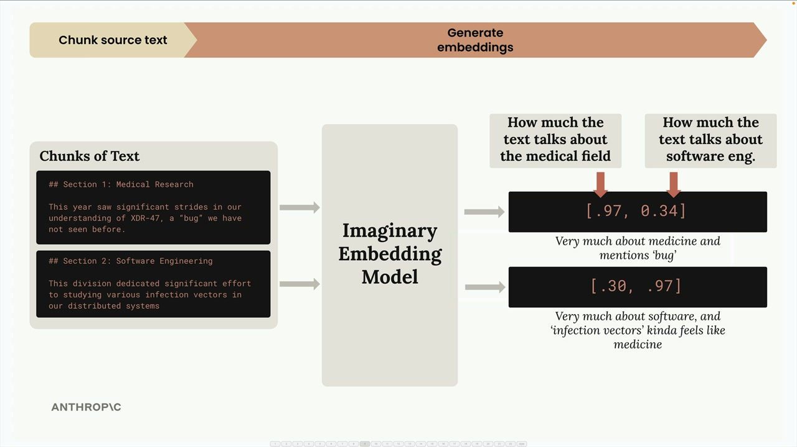
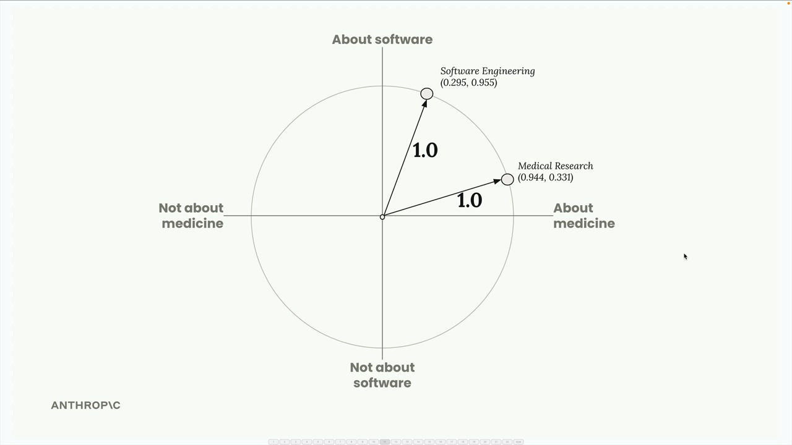
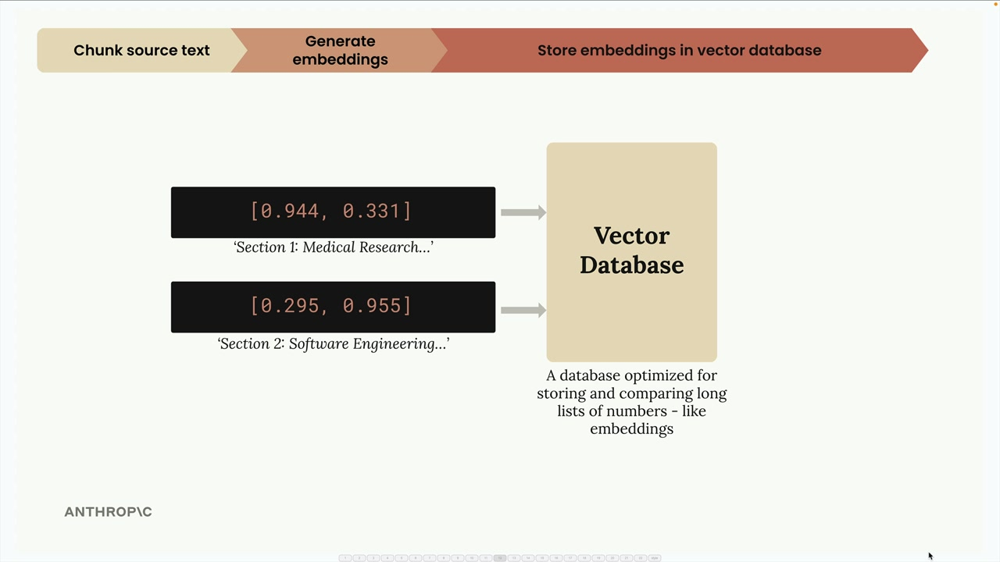
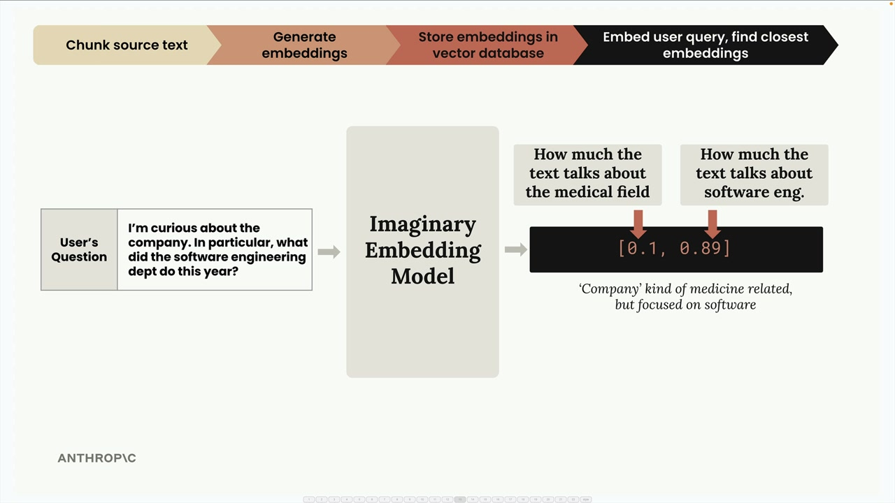
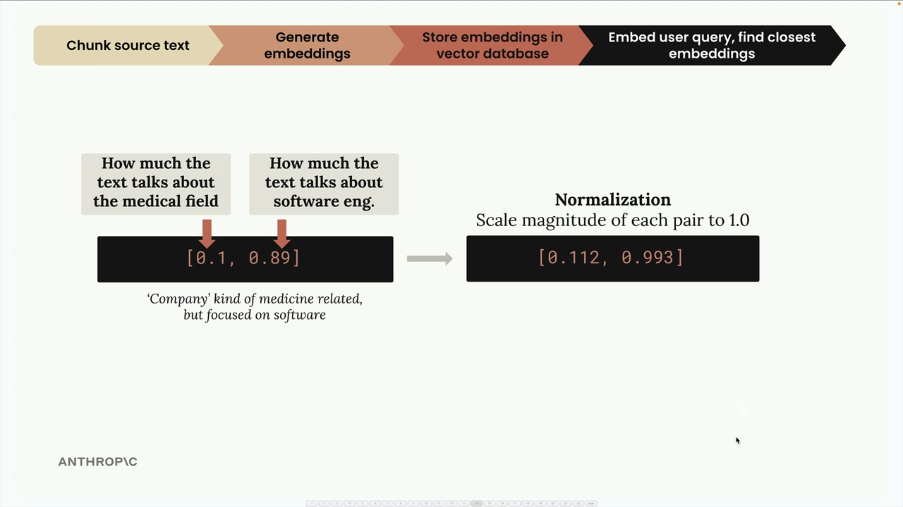
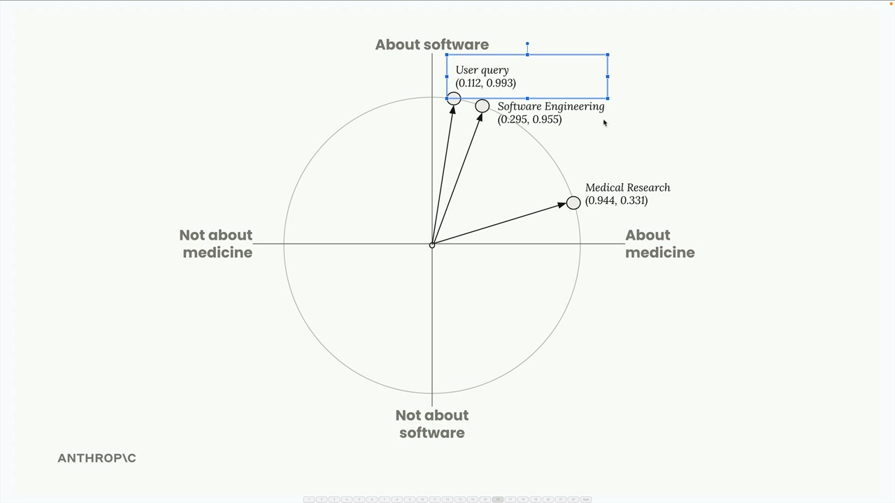
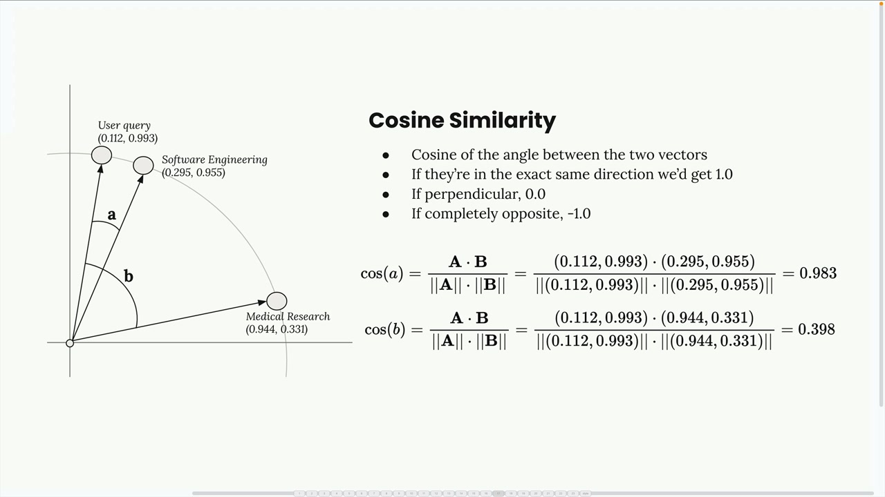
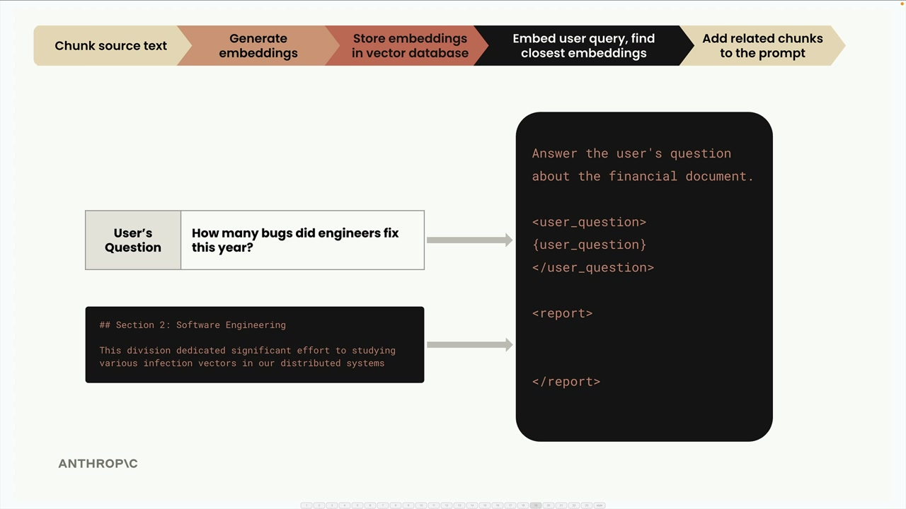

Полный поток RAG
Чему научитесь
Видео 8:00 и текст урока
К концу урока вы сможете:
- пройти все шаги RAG от фрагментов до итогового промпта;
- объяснить нормализацию и роль векторной базы данных;
- считать и интерпретировать косинусное сходство и косинусное расстояние.
Видео и текст урока.
Смотреть урок на Skilljar The full RAG flow · 8:00Основы RAG, разбиение текста и эмбеддинги разобраны — пройдём весь конвейер RAG шаг за шагом. Пример покажет, как все части работают вместе, чтобы найти нужную информацию и сгенерировать ответ.
Шаг 1. Разбиваем исходный текст
Сначала берём исходный документ и делим его на удобные фрагменты. В примере — два простых раздела:
- Раздел 1, медицинские исследования: «This year saw significant strides in our understanding of XDR-47, a 'bug' we have not seen before.»
- Раздел 2, разработка ПО: «This division dedicated significant effort to studying various infection vectors in our distributed systems»
Шаг 2. Генерируем эмбеддинги
Затем превращаем каждый фрагмент в числовой эмбеддинг с помощью модели эмбеддингов. Для простоты представим идеальную модель, которая всегда возвращает ровно два числа, и мы знаем, что означает каждое.

В нашей воображаемой модели:
- первое число — насколько текст о медицине;
- второе число — насколько текст о разработке ПО.
Для медицинского раздела получится, скажем, [0.97, 0.34] — в основном о медицине, но с долей программного из-за слова «bug». Для раздела о разработке — [0.30, 0.97]: в основном о ПО, но с медицинским оттенком из-за «infection vectors».
Нормализация
API эмбеддингов обычно выполняет нормализацию: масштабирует каждый вектор так, чтобы его длина была 1.0. Вникать в математику не нужно — это делается автоматически. Получаем нормализованные векторы вроде [0.944, 0.331] и [0.295, 0.955].

Эти эмбеддинги можно изобразить на единичной окружности: каждая точка — один фрагмент текста.

Шаг 3. Сохраняем в векторной базе данных
Сохраняем эмбеддинги в векторной базе данных — специализированной базе, оптимизированной для хранения, сравнения и поиска по длинным спискам чисел вроде наших эмбеддингов.

На этом пауза. Всё, что сделано до сих пор, — предобработка, которая выполняется заранее. Теперь ждём, пока пользователь задаст вопрос.
Шаг 4. Обрабатываем вопрос пользователя
Когда пользователь спрашивает, например, «I'm curious about the company. In particular, what did the software engineering dept do this year?», мы пропускаем вопрос через ту же модель эмбеддингов.

Вопрос превращается во что-то вроде [0.1, 0.89] — мало медицины, много разработки ПО. После нормализации — [0.112, 0.993].
Шаг 5. Ищем похожие эмбеддинги
Отправляем эмбеддинг вопроса в векторную базу и просим найти самые похожие из сохранённых.

База возвращает раздел о разработке ПО — он ближе всего к тому, о чём спросил пользователь.
Как измеряется сходство: косинусное сходство
Векторная база определяет самые похожие эмбеддинги по косинусному сходству (cosine similarity) — косинусу угла между двумя векторами.

Главное о косинусном сходстве:
- результат лежит в диапазоне от −1 до 1;
- значения около 1 — высокое сходство;
- значения около −1 — тексты сильно различаются;
- 0 — векторы перпендикулярны (связи нет).
В нашем примере косинусное сходство вопроса и фрагмента о разработке — 0.983, очень высокое. С медицинским фрагментом — всего 0.398, намного ниже.
Косинусное расстояние
В документации векторных баз часто встречается «косинусное расстояние» (cosine distance). Оно считается просто как 1 − косинусное сходство. Для косинусного расстояния:
- значения около 0 — высокое сходство;
- чем больше значение, тем меньше сходство.
Такая поправка во многих случаях делает числа нагляднее.
Шаг 6. Собираем итоговый промпт
Наконец, берём вопрос пользователя и самый подходящий найденный фрагмент, объединяем в промпт и отправляем Claude за ответом.

Промпт может выглядеть так:
Answer the user's question about the financial document. <user_question> How many bugs did engineers fix this year? </user_question> <report> ## Section 2: Software Engineering This division dedicated significant effort to studying various infection vectors in our distributed systems </report>
Это весь конвейер RAG! Система нашла самую релевантную информацию по смысловому сходству и передала её как контекст для точного ответа.
Дальше
Следующий урок реализует этот поток в коде: векторное хранилище, добавление фрагментов и поиск.
Оригинал урока: The full RAG flow.